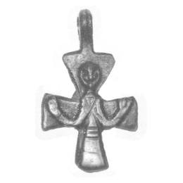
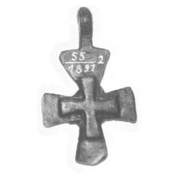

Catalog › CE-0035 · LOV1999-29
Cruce pectorală cu Hristos răstignit și cruce grecească pe spate
prima jumătate a sec. XI (1001–1050) · Nyírkarász, Szabolcs-Szatmár (Kom.), Ungaria · Muzeul Național Maghiar, Budapesta, inv. 1891.55.2
pectoral cross, bronz; prima jumătate a c. XI (1001–1050); found at Nyírkarász, Szabolcs-Szatmár (Kom.), Ungaria; kept at Muzeul Național Maghiar, Budapesta.




Identificare
- Categorie
- Cruce pectorală simplă
- Material
- Bronz
- Tehnică
- Turnare în relief
- Dimensiuni
- Î 53 × L 30 mm
Iconografie
- Descriere avers
- Hristos în relief, cu chip asemănător unei păsări și brațele îndoite în sus; trunchiul și picioarele acoperite de o haină lungă cu trei linii orizontale gravate; picioarele nu se văd.
- Revers
- Ornament geometric
- Descriere revers
- O cruce grecească cu brațe care se lărgesc, în relief.
Datare și atribuire
- Datare
- prima jumătate a sec. XI (1001–1050)
- Centru
- Atelier local
Descoperire
- Localitate
- Nyírkarász
- Regiune
- Szabolcs-Szatmár (Kom.)
- Țară
- Ungaria
- Context
- Necropolă / mormânt
- Coordonate
- 48.0969° N, 22.1002° E
- Precizia locului
- Doar localitatea
Păstrare și referințe
- Colecție
- Muzeul Național Maghiar, Budapesta
- Nr. inventar
- 1891.55.2
- Bibliografie
- Zs. Lovag, Mittelalterliche Bronzegegenstände des Ungarischen Nationalmuseums (Catalogi Musei Nationalis Hungarici, Series Archaeologica III), Budapest, 1999, p. 29, cat. nr. 29, reprodusă la Abb. 29 a-b (planșele, p. 135). Bibliografie citată în sursă: Jósa 1892, 171, 274; Hampel 1907, 173; Bárány-Oberschall 1953, 235, Abb. 75.i; Szőke 1962, I. 62; Lovag 1979, 47, Abb. 2/a; Lovag 1980, 367, Abb. 1/8; Lovag 1982, 162, Abb. 10.
- Figura
- Abb. 29 a-b
- Planșe
- Lovag 1999, planșele, p. 135
- Observații
- Datare după Lovag: prima jumătate a sec. XI. XI. Găsită la distrugerea unei necropole cu câteva sute de morminte, împreună cu monede de la Sf. Ștefan, Petru și Sf. Ladislau. Un exemplar aproape identic provine dintr-un mormânt de copil din necropola Püspökladány-Eperjeshalom (sec. X–XI), datat cu o monedă de la Sf. Ștefan. Cruce latină cu brațe care se lărgesc robust, cu ureche de agățare sus. Coordonate: ale localității (aproximative), nu date în sursă.
Citare: Corpus Encolpiorum, CE-0035, Cruce pectorală cu Hristos răstignit și cruce grecească pe spate, --root/piese/LOV1999-29/ (accesat 2026-10-17).